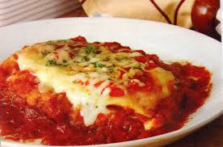
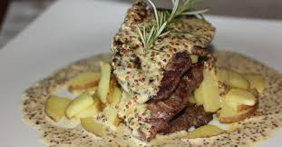

Massas
- 
Imagem do filé a parmegiana.
- Filé a Pargiana
- Filé mignon empanado com molho vermelho coberto de queijo.
- Autor: Tiago Ribeiro
- Avaliação: 5
- 107 pessoas avaliaram essa receita

Imagem do filé ao molho madeira- Filé ao molho madeira
- Delicioso filé mignon ao molho madeira!
- Autor: Silvia Martins
- Avaliação: 3
- 81 pessoas avaliaram essa receita
- 
Imagem do filé ao molho dijon.
- Filé ao molho Dijon
- Filé mignon ao molho de mostarda dijon e pimenta rosa.
- Autor: Artur Campos
- Avaliação: 5
- 66 pessoas avaliaram essa receita